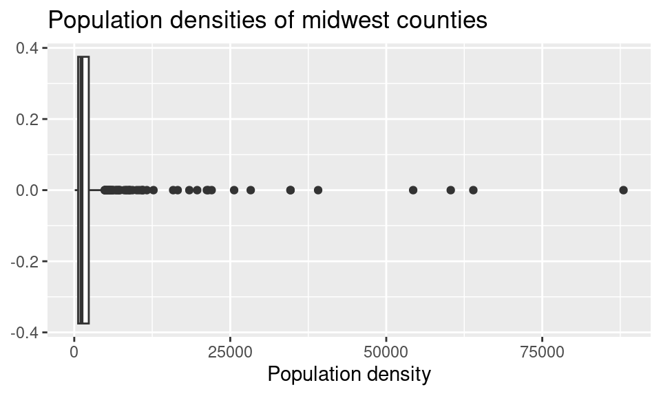
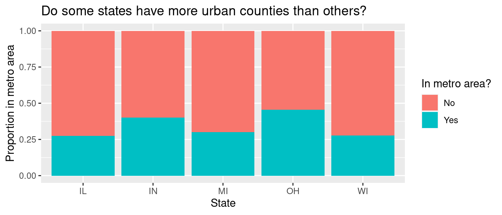

Lab 2 - Data wrangling
Introduction
In this lab you’ll continue to hone your data science workflow as well as bring together what you learned so far in the course (data visualization) with what’s coming up (data wrangling).
Learning objectives
By the end of the lab, you will…
- Be able to create transform data using
dplyr - Build on your mastery of data visualizations using
ggplot2 - Get more experience with data science workflow using R, RStudio, Git, and GitHub
- Further your reproducible authoring skills with Quarto
- Improve your familiarity with version control using Git and GitHub
Getting started
Log in to RStudio
- Go to https://cmgr.oit.duke.edu/containers and log in with your Duke NetID and Password.
- Click
STA198-199under My reservations to log into your container. You should now see the RStudio environment.
Clone the repo & start new RStudio project
Go to the course organization at github.com/sta199-s24 organization on GitHub. Click on the repo with the prefix lab-2. It contains the starter documents you need to complete the lab.
Click on the green CODE button, select Use SSH (this might already be selected by default, and if it is, you’ll see the text Clone with SSH). Click on the clipboard icon to copy the repo URL.
In RStudio, go to File ➛ New Project ➛Version Control ➛ Git.
Copy and paste the URL of your assignment repo into the dialog box Repository URL. Again, please make sure to have SSH highlighted under Clone when you copy the address.
Click Create Project, and the files from your GitHub repo will be displayed in the Files pane in RStudio.
Click lab-2.qmd to open the template Quarto file. This is where you will write up your code and narrative for the lab.
First steps
In lab-2.qmd, update the author field to your name, render your document and examine the changes. Then, in the Git pane, click on Diff to view your changes, add a commit message (e.g., “Added author name”), and click Commit. Then, push the changes to your GitHub repository, and in your browser confirm that these changes have indeed propagated to your repository.
If you run into any issues with the first steps outlined above, flag a TA for help before proceeding.
Packages
In this lab we will work with the tidyverse package, which is a collection of packages for doing data analysis in a “tidy” way.
Render the document which loads this package with the library() function.
Remember: The rendered document will include a message about which packages the tidyverse package is loading along with it. It’s just R being informative, a message does not indicate anything is wrong (it’s not a warning or an error).
Guidelines
As we’ve discussed in lecture, your plots should include an informative title, axes should be labeled, and careful consideration should be given to aesthetic choices.
In addition, the code should all the code should be be able to be read (not run off the page) when you render to PDF. Make sure that is the case, and add line breaks where the code is running off the page.1
Continuing to develop a sound workflow for reproducible data analysis is important as you complete the lab and other assignments in this course. There will be periodic reminders in this assignment to remind you to render, commit, and push your changes to GitHub. You should have at least 3 commits with meaningful commit messages by the end of the assignment.
Questions
Part 1
Back to the Midwest!
In this part you will revisit and build on some of your findings from Lab 1, where you explored the midwest data frame. Remember that this data frame is bundled with the ggplot2 package and is automatically loaded when you load the tidyverse package. As a refresher, the data contains demographic characteristics of counties in the Midwest region of the United States. You can read documentation for the data set, including variable definitions by typing ?midwest in the Console or searching for midwest in the Help pane.
Question 1
Calculate the number of counties in each state and display your results in descending order of number of counties. Which state has the highest number of counties, and how many? Which state has the lowest number, and how many?
The number of counties in a state can change over time, so the values you see in this output may not be true today.
Render, commit, and push your changes to GitHub with the commit message “Added answer for Question 1”.
Make sure to commit and push all changed files so that your Git pane is empty afterward.
Question 2
While in a given state two counties can’t have the same name, across states some county names might be shared. A classmate says “Look at that, there is a county called ___ in each state in this dataset!” In a single pipeline, discover all counties that could fill in the blank. Your response should be a data frame with only the county names that could fill in the blank and how many times they appear in the data.
You will want to use the filter() function in your answer, which requires a logical condition to describe what you want to filter for. For example filter(x > 2) means filter for values of x greater than 2, filter(y <= 3) means filter for values of y less than or equal to 3.
The table below is a summary of logical operators and how to articulate them in R.
| operator | definition |
|---|---|
< |
less than |
<= |
less than or equal to |
> |
greater than |
>= |
greater than or equal to |
== |
exactly equal to |
!= |
not equal to |
x & y |
x AND y
|
x | y
|
x OR y
|
is.na(x) |
test if x is NA
|
!is.na(x) |
test if x is not NA
|
x %in% y |
test if x is in y
|
!(x %in% y) |
test if x is not in y
|
!x |
not x
|
Render, commit, and push your changes to GitHub with the commit message “Added answer for Question 2”.
Make sure to commit and push all changed files so that your Git pane is empty afterward.
Question 3
Return to the following box plot of population densities where you were asked to identify at least one outlier.

In this question part, we want you to revisit this box plot and identify the counties described in each part.
a. The counties with a population density higher than 25,000. Your code must use the filter() function.
b. The county with the highest population density. Your code must use the max() function.
Answer using a single data wrangling pipeline for each part. Your response should be a data frame five columns: county name, state name, population density, total population, and area, in this order. If your response has multiple rows, the data frame should be arranged in descending order of population density.
Render, commit, and push your changes to GitHub with the commit message “Added answer for Question 3”.
Make sure to commit and push all changed files so that your Git pane is empty afterward.
Question 4
In Lab 1 you were also asked to describe the distribution of population densities. The following is one acceptable description that touches on shape, center, and spread of this distribution. Calculate the values that should go into the blanks.
The distribution of population density of counties is unimodal and extremely right-skewed. A typical Midwestern county has population density of ____ people per unit area. The middle 50% of the counties have population densities between ___ to ___ people per unit area.
Think about which measures of center and spread are appropriate for skewed distributions.
Render, commit, and push your changes to GitHub with the commit message “Added answer for Question 4”.
Make sure to commit and push all changed files so that your Git pane is empty afterward.
Question 5
Another visualization from Lab 1 was the following that showed the proportion of urban counties in each state.

Calculate these proportions in a single data pipeline.
Remember, you’ll first need to create a new variable called metro which takes on the value Yes if the value of inmetro is 1, and No otherwise. You can refer to Lab 1 if you need a refresher on how to do this.
Render, commit, and push your changes to GitHub with the commit message “Added answer for Question 5”.
Make sure to commit and push all changed files so that your Git pane is empty afterward.
Question 6
Return to the following scatter plot of percentage below poverty vs. percentage of people with a college degree, where the color and shape of points are determined by state where you were asked to identify at least one county that is a clear outlier by name.

a. In a single pipeline, identify the observations marked in the orange square on the upper left corner. Your answer should be a data frame with four variables: county, state, percentage below poverty, and percentage college educated.
b. In a single pipeline, identify the observations marked in the red square in the plot above. Your answer should again be a data frame with four variables: county, state, percentage below poverty, and percentage college educated.
c. Bring your answers from part (a) and part (b) together! In a single pipeline, and a single filter() statement, identify the observations marked in the red and orange square in the plot above. Your answer should again be a data frame with four variables: county, state, percentage below poverty, and percentage college educated.
d. Create a new variable in midwest called potential_outlier. This variable should take on the value:
Yesif the point is one the ones you identified in part (c), i.e., one of the points marked in the squares in the plot above.Nootherwise.
Then, display the updated midwest data frame, with county, state, percentage below poverty, percentage college educated, potential_outlier as the selected variables, arranged in ascending order of potential_outlier.
c. Recreate the visualization above, i.e. a scatterplot of percentage below poverty vs. percentage of people with a college degree, however color the points by the newly created potential_outlier variable instead of state.
Render, commit, and push your changes to GitHub with the commit message “Added answer for Question 6”.
Make sure to commit and push all changed files so that your Git pane is empty afterward.
Question 7
a. In a single pipeline, calculate the total population for each state and save the resulting data frame as state_population and display it in descending order of total population.
b. Then, in a separate pipeline, calculate the proportion of the total population in each state and, once again, display the results in descending order of proportion of population.
In answering parts (a) and (b), you’ll create two new variables, one for total population and other for proportion of total proportion. Make sure to give them “reasonable” names – short but evocative.
c. Which Midwestern state is most populous and what percent of the Midwest population lives there? Which is the least populous and what percent lives there?
Render, commit, and push your changes to GitHub with the commit message “Added answer for Question 7”.
Make sure to commit and push all changed files so that your Git pane is empty afterward.
Question 8
Calculate the average percentage below poverty for each state and save the resulting data frame as state_poverty with the columns state and mean_percbelowpoverty.
Then, in a new pipeline, display the state_poverty data frame in ascending order of mean_percbelowpoverty. Which state has the lowest average percentage below poverty across its counties? Which state has the highest average percentage below poverty across its counties?
Render, commit, and push your changes to GitHub with the commit message “Added answer for Question 8”.
Make sure to commit and push all changed files so that your Git pane is empty afterward.
Part 2
All about group_by()!
Question 9
Suppose we have the following data frame:
df <- tibble(
var_1 = c(10, 20, 30, 40, 50),
var_2 = c("Pizza", "Burger", "Pizza", "Pizza", "Burger"),
var_3 = c("Apple", "Apple", "Pear", "Pear", "Banana")
)
df# A tibble: 5 × 3
var_1 var_2 var_3
<dbl> <chr> <chr>
1 10 Pizza Apple
2 20 Burger Apple
3 30 Pizza Pear
4 40 Pizza Pear
5 50 Burger Bananaa. What does the following code chunk do? Run it and analyze the result and articulate in words what arrange() does.
df |>
arrange(var_2)b. What does the following code chunk do? Run it and analyze the result and articulate in words what group_by() does. Also comment on how it’s different from the arrange() in part (a)?
df |>
group_by(var_2)c. What does the following code chunk do? Run it and analyze the result and articulate in words what the pipeline does.
d. What does the following code chunk do? Run it and analyze the result and articulate in words what the pipeline does. Then, comment on what the message says.
e. What does the following code chunk do? Run it and analyze the result and articulate in words what the pipeline does, especially mentioning what the .groups argument does. How is the output different from the one in part (d).
f. What do the following pipelines do? Run both and analyze their results and articulate in words what each pipeline does. How are the outputs of the two pipelines different?
Render, commit, and push your changes to GitHub with an appropriate commit message.
Make sure to commit and push all changed files so that your Git pane is empty afterward.
Question 10
Did you select your pages on Gradescope? You don’t need to write an answer for this question, if you select your pages when you upload your lab to Gradescope, you’ll get full points on this question. Otherwise, you’ll get a 0 on this question.2
Wrap-up
Submission
Once you are finished with the lab, you will submit your final PDF document to Gradescope.
Before you wrap up the assignment, make sure all of your documents are updated on your GitHub repo. We will be checking these to make sure you have been practicing how to commit and push changes.
You must turn in a PDF file to the Gradescope page by the submission deadline to be considered “on time”.
To submit your assignment:
- Go to http://www.gradescope.com and click Log in in the top right corner.
- Click School Credentials \(\rightarrow\) Duke NetID and log in using your NetID credentials.
- Click on your STA 199 course.
- Click on the assignment, and you’ll be prompted to submit it.
- Mark all the pages associated with question. All the pages of your lab should be associated with at least one question (i.e., should be “checked”).
Make sure you have:
- attempted all questions
- rendered your Quarto document
- committed and pushed everything to your GitHub repository such that the Git pane in RStudio is empty
- uploaded your PDF to Gradescope
- selected pages associated with each question on Gradescope
Grading
The lab is graded out of a total of 50 points.
On Questions 1 through 9, you can earn up to 5 points on each question:
5: Response shows excellent understanding and addresses all or almost all of the rubric items.
4: Response shows good understanding and addresses most of the rubric items.
3: Response shows understanding and addresses a majority of the rubric items.
2: Response shows effort and misses many of the rubric items.
1: Response does not show sufficient effort or understanding and/or is largely incomplete.
0: No attempt.
On Question 10, you can earn either 0 or 5 points for selecting questions and pages on Gradescope:
- 5: Selected questions and pages on Gradescope.
- 0: Did not select some or all questions and pages on Gradescope.